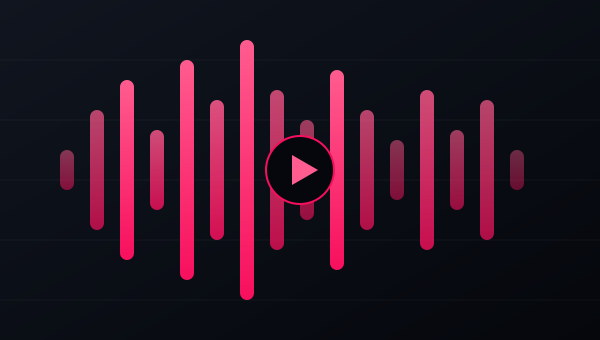

// live project
TopcityJam Media
A music, album, and entertainment website built for free downloads. Includes a custom pink-styled audio player and a PHP-based upload panel where artist names and song titles entered on upload automatically populate the player, no manual re-entry required.
Visit topcityjam.com →